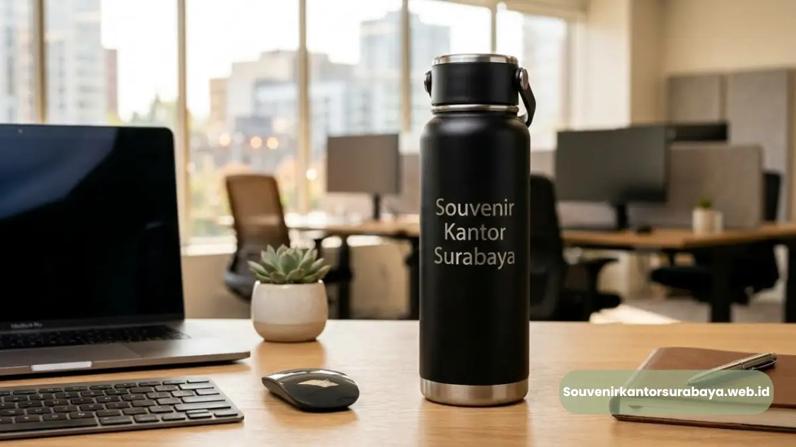

Perlengkapan kerja custom logo untuk menunjang aktivitas harian karyawan kantor.
- Variasi Perlengkapan Kerja Custom Logo yang Tersedia
- Tumbler dan Botol Minum Branding untuk Aktivitas Kantor
- Notebook dan Tas Kerja untuk Mendukung Mobilitas Karyawan
- Pemesanan Paket Perlengkapan Kerja untuk Karyawan Baru
- Alat Tulis Custom Logo untuk Kelengkapan Meja Kerja
- Pesan Perlengkapan Kerja Custom Logo di Souvenir Kantor Surabaya
Perlengkapan kerja custom logo untuk karyawan kantor. Vendor Souvenir Kantor menyediakan perlengkapan kerja custom logo berupa tumbler, notebook, dan tas kerja yang siap dipesan untuk mendukung aktivitas harian karyawan.
Variasi Perlengkapan Kerja Custom Logo yang Tersedia
Vendor Souvenir Kantor menyediakan beberapa jenis perlengkapan kerja custom logo yang paling banyak dipilih perusahaan untuk kebutuhan operasional harian.
- Tumbler dan botol minum custom logo untuk penggunaan sehari-hari di kantor.
- Notebook dan agenda kerja branding untuk kebutuhan meeting dan pencatatan tugas.
- Tas kerja custom logo untuk mobilitas karyawan saat bertugas di luar kantor.
- Alat tulis set custom logo untuk kelengkapan meja kerja karyawan.
Setiap produk dapat dipesan terpisah atau digabung menjadi satu paket perlengkapan kerja untuk karyawan baru, dengan opsi penyesuaian jumlah unit sesuai anggaran tahunan yang sudah disiapkan perusahaan.
Baca Juga
Tumbler dan Botol Minum Branding untuk Aktivitas Kantor
Tumbler custom logo dari Souvenir Kantor Surabaya menjadi perlengkapan kerja yang paling sering digunakan karyawan sekaligus media branding harian perusahaan.
Tumbler yang digunakan setiap hari oleh karyawan memberikan eksposur logo yang berulang, baik di lingkungan kantor maupun saat dibawa bepergian.
Bahan stainless steel dengan lapisan tahan panas dan dingin menjadi pilihan yang umum digunakan karena daya tahannya yang baik.
Proses cetak logo pada tumbler biasanya menggunakan teknik laser atau sablon UV agar warna tetap tahan lama meskipun sering dicuci dan digunakan dalam jangka waktu panjang.
Pilihan kapasitas tumbler juga dapat disesuaikan dengan kebutuhan karyawan, mulai dari ukuran ringkas untuk dibawa bepergian hingga ukuran lebih besar untuk penggunaan di meja kerja sepanjang hari.

Tumbler botol minum custom logo perusahaan untuk aktivitas harian.
Notebook dan Tas Kerja untuk Mendukung Mobilitas Karyawan
Notebook dan tas kerja custom logo dari Vendor Souvenir Kantor mendukung mobilitas karyawan sekaligus menampilkan identitas brand perusahaan secara konsisten.
Notebook branding umum digunakan pada sesi meeting internal maupun pertemuan dengan klien, sehingga logo perusahaan turut terlihat dalam berbagai kesempatan kerja.
Sampul notebook dapat dipilih dari bahan kulit sintetis atau kanvas sesuai preferensi tampilan perusahaan.
Tas kerja custom logo dirancang dengan kompartemen yang cukup untuk menyimpan laptop dan dokumen kerja, sehingga tetap fungsional digunakan karyawan yang sering bepergian untuk urusan dinas maupun kunjungan klien.
Desain tas juga dapat disesuaikan antara model jinjing dan model ransel tergantung kebutuhan mobilitas masing-masing tim kerja.
Pemesanan Paket Perlengkapan Kerja untuk Karyawan Baru
Vendor Souvenir Kantor melayani pemesanan paket perlengkapan kerja custom logo yang dirancang khusus untuk kebutuhan welcome kit karyawan baru.
Paket welcome kit biasanya berisi kombinasi tumbler, notebook, dan alat tulis dengan kemasan yang telah disesuaikan warna dan logo perusahaan.
Paket ini membantu menciptakan kesan pertama yang profesional bagi karyawan yang baru bergabung.
Perusahaan dapat mengatur jumlah pemesanan secara berkala mengikuti jadwal rekrutmen, sehingga stok perlengkapan kerja selalu tersedia setiap kali ada karyawan baru yang bergabung ke dalam tim.
Alat Tulis Custom Logo untuk Kelengkapan Meja Kerja
Alat tulis custom logo dari Souvenir Kantor Surabaya melengkapi kebutuhan meja kerja karyawan sekaligus menjadi merchandise tambahan yang praktis dipesan dalam jumlah besar.
Set alat tulis seperti pulpen, penggaris, dan sticky notes custom logo umum ditambahkan pada paket perlengkapan kerja karena harganya yang terjangkau namun tetap memberikan eksposur logo yang cukup sering.
Produk ini juga sering digunakan sebagai merchandise tambahan pada acara internal maupun kunjungan tamu ke kantor.
Kombinasi alat tulis dengan notebook dan tumbler dalam satu paket membuat tampilan merchandise terlihat lebih lengkap, terutama untuk kebutuhan welcome kit karyawan baru yang ingin memberikan kesan menyeluruh sejak hari pertama bekerja.
Pemilihan warna alat tulis juga dapat disesuaikan agar selaras dengan produk lain dalam paket yang sama.

Hawa Nadira
Tim penulis CorporateGifts ID berfokus pada strategi souvenir kantor, merchandise korporat, dan inovasi brand untuk klien B2B.
Keahlian: Branding perusahaan, produksi souvenir, paket event, desain materi promosi.
Artikel Terkait

Merchandise Branding Karyawan
Rekomendasi merchandise branding karyawan kantor untuk perusahaan. Apparel, perlengkapan kerja, dan gift set custom logo.
Baca SelengkapnyaSouvenir Kantor Custom Logo
Strategi souvenir kantor custom logo untuk memperkuat identitas brand perusahaan di Surabaya.
Baca SelengkapnyaApparel Custom Logo Seragam
Apparel custom logo dari Vendor Souvenir Kantor untuk seragam karyawan. Kemeja, polo shirt, dan jaket bordir bermerek.
Baca Selengkapnya